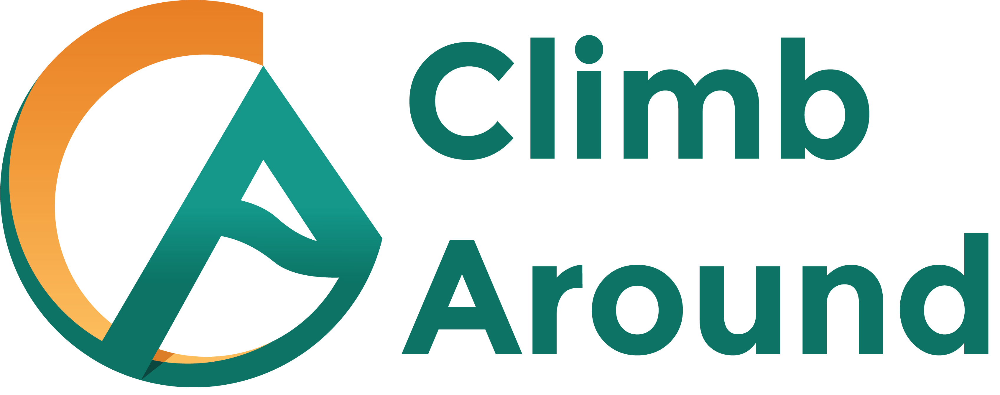
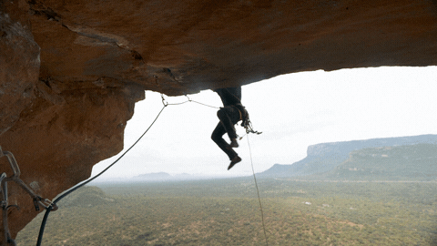
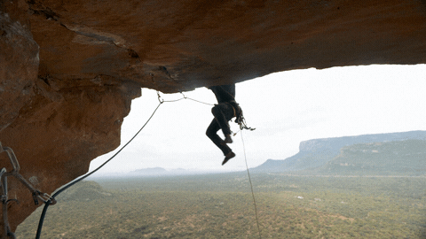
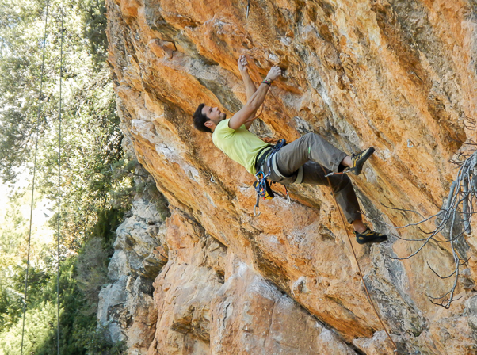

 

Rodellar, destaca por su escalada deportiva en paredes de caliza con desplomes,
vías largas y buenos cantos. Atractivo en verano, ofrece sectores a la sombra y el río Mascún para refrescarse.
La zona es ideal en primavera y otoño, pero se debe evitar después de lluvias.
La resistencia es crucial para las desafiantes rutas entre chorreras y techos,
atrae a escaladores internacionales por la calidad y dificultad de sus vías.

- Vías espectaculares en grandes desplomes.
- Es una zona ideal para verano, con sombra y pozas para refrescarse.
- Desplome, vías atléticas y largas, resistencia y chorreras.
|
Información vías |
| 2 / 5+ |
33 |
| 6a / 6c+ |
129 |
| 7a / 7c+ |
259 |
| 8a / 9c+ |
130 |
| Proyectos |
41 |